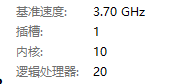

kafl paper阅读
摘要
介绍了当下fuzz的重要性，基于反馈的fuzzer可以发现很多安全问题。但是针对kernel当今没有很好的解决方案，然后作者解释原因，如kernel crash了整个系统重启，fuzzer也会没。最后介绍kafl，基于硬件特性如hypervisor和pt从而使得fuzzer和操作系统隔离开来。成功挖到许多漏洞。
介绍
随着各种高大上的保护出现，常见的漏洞越来越难利用，但是内核态的防护还是不多，而且很多复杂防护会影响操作系统运行效率导致没有上。导致关注内核的人越来越多。
很长一段时间来fuzz都是一种增加软件安全性的好策略。随着afl的公开，业界出现了越来越多的smart fuzz，基于input的反馈来“学习”，从而一步步推出数据格式，增大代码覆盖率。但是afl是面向用户态的缺少内核态支持，内核态复杂很多会遇到很多困难。
本文的kafl将退出一种全新的技术来允许反馈式fuzz运用于所有基于x86-64的内核。并具有很好的可移植性。
技术背景
利用了一些硬件特性，需要cpu支持，本节主要介绍一些硬件的特性。
x86-64 Virtual Memory Layouts
用户态内核态的虚拟地址布局，内核态每个进程共享，一个物理地址映射到多个虚拟地址
Intel VT-x
kafl内核层fuzz基于硬件虚拟化技术。
三种不同的cpu，物理cpu，逻辑cpu，虚拟cpu。
物理cpu是真实的cpu，大部分现代cpu都实现了超线程技术，用于在单核上运行多线程。所以就出现了逻辑cpu，每个核心都有几个逻辑处理器

如i9 10900k，就是10核心，20逻辑处理器。
每个核心俩个逻辑处理器在交错处理时效率会很大，如一个逻辑处理器在进行计算另一个在进行等待
vt还在学。。。
https://space.bilibili.com/37877654/?spm_id_from=333.999.0.0
b站有up主做了一系列的视频
//已经9月了先上传一部分，其他的会继续写完。